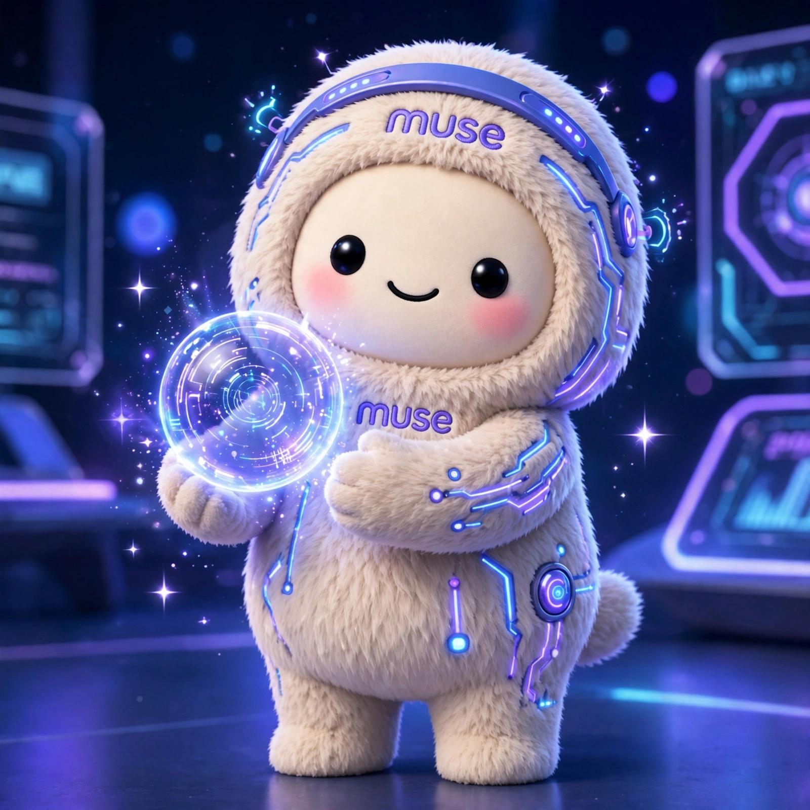

能力展示 · 全部由 Muse 绘制、经本工具链取回
四张图两种通道：前两张走官方 muse.ai/files（每张一次人工审批），后两张走 COS 预签名中转（零审批、15 秒落地、直链永久）——对比即选型。


把 Meta 的 Muse 接入 Claude Code / Zcode 等编程 Agent
聊天 · 异步画图（原生 ImageContent）· COS 零审批中转 · 全链路本地
对比官方 muse.ai/files 转存（每张图弹一次人工审批），COS 中转全程零弹窗、 直链永久有效；未配置 COS 时自动回落官方路线。实测：小奶猫、加菲猫两次端到端，15 秒内落地。
社区 muse-client（官方协议 TS 移植），Mac 内置蓝牙配对，零额外硬件。配对后手机彻底退役。国内网络配 bridge_proxy 一行走代理（proxychains4 免 TUN）。不注册任何本机命令。
官方 muse-gadget-sdk systemd 常驻，服务器唯一持凭证，任意多台设备 backend: ssh 共用；Muse 可执行 system.run/file.*（可裁剪）。授权一次，配对机即退役（需 USB 蓝牙）。
配对凭证可迁移，Windows 也能运行（借一台 Mac/WSL2 授权一次）。切换 backend 一行配置，11 个 MCP 工具面完全一致。
| 工具 | 用途 |
|---|---|
muse_chat / muse_send | 发消息收回答 / 发后即走；默认走 agent 专属 side chat，不污染主聊天 |
muse_start_image_generation + muse_get_image_result | 异步画图：任务持久化、超时不丢、重查不重画；返回原生 ImageContent + 永久直链 |
muse_get_images | 上两步的便捷封装（一步等到底） |
muse_send_image | 把本地图发给 Muse 分析（≤2 MiB） |
muse_notifications | 被动收 Muse 主动推来的消息/图片（配合 zcode-bridge 技能） |
muse_status / muse_doctor / muse_sessions | 连接体检 / 逐项排障清单（每项带下一步命令）/ 会话管理 |
配好 SDK token、连上代理后 5 分钟内可达「画图零审批」。
git clone https://github.com/ahao430/muse-skill && cd muse-skill
uv sync && uv run pytest && (cd bridge && bun install)
# SDK token: https://gadgets.muse.ai/settings/sdk-tokens
echo 'mgst_…' > ~/.config/muse-agent/sdk_token
# 配对（手机 app: Developer mode → Add Device → 选 MuseGadgetXXXXXX）
bun bridge/bridge.mjs pair
bun bridge/bridge.mjs status # ready: true
# 国内网络：config.yaml 加一行，免 TUN 走代理
echo 'bridge_proxy: http://127.0.0.1:7897' >> ~/.config/muse-agent/config.yaml
# （推荐）COS 图片中转：三行配置后画图零审批，详见 README 路线 A3# 在有蓝牙的 Linux 上配对一次（USB BLE / 树莓派）：
sudo bash install.sh --sdk-token mgst_… --yes && sudo musegadget pair
scp /var/lib/musegadget/{identity,pairing}.json 你@Mac:~/muse-pairing/
# 部署常驻主机并导入凭证（配对机使命结束）
scripts/provision.sh --host USER@HOST --sdk-token mgst_…
scripts/import_state.sh ~/muse-pairing --host USER@HOST
# 每台设备 config.yaml:
# backend: ssh
# host: USER@HOST# 注册 MCP（Claude Code）：
claude mcp add muse -- uv --directory …/muse-skill run muse-agent
# 然后对 agent 说：「让 Muse 画一张 ……」画图拆成 start/result 两步：超时是状态不是错误，任务持久化、重查不重画；审批等待独立成 approval_required 并附指引。
COS 密钥只在 Mac；Muse 只收到 1 小时一次性预签名 PUT。签名算法纯 Python 自实现，配对/自测命令权威验收。
代理节点劣化、bun 代理 WS 缺陷、TLS 重置——proxychains4 免 TUN 方案固化，网络类失败可重试不判死。
状态机/去重/超尺寸/不内联/预签名接线全 mock 化；GitHub Actions 跑 pytest 与脚本检查。
四张图两种通道：前两张走官方 muse.ai/files（每张一次人工审批），后两张走 COS 预签名中转（零审批、15 秒落地、直链永久）——对比即选型。